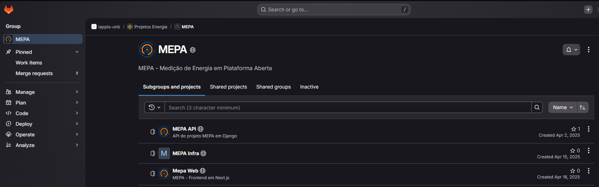
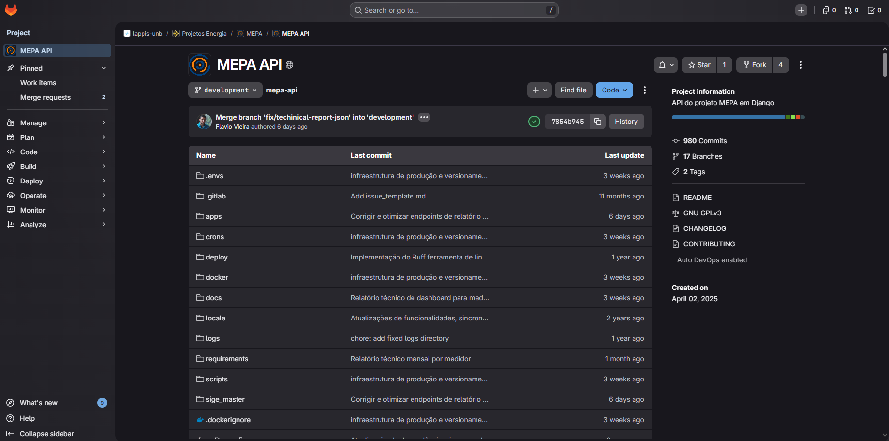
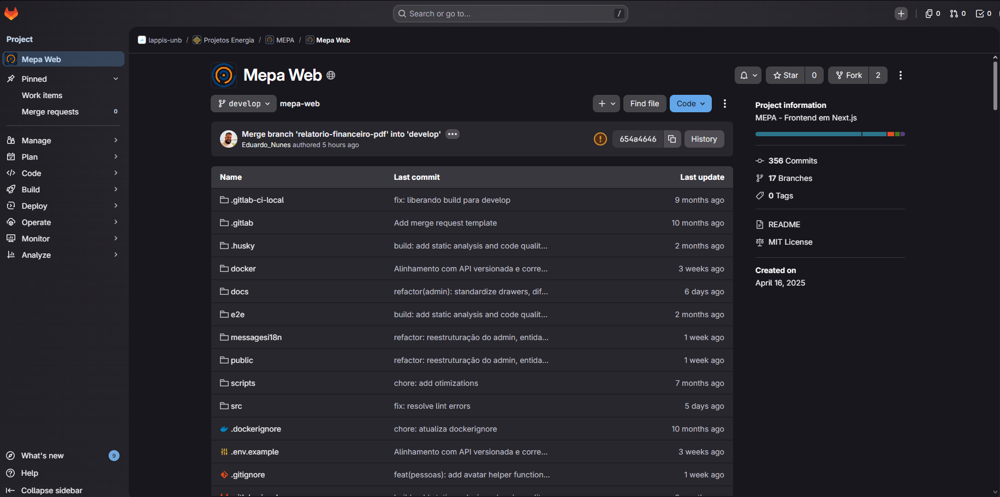
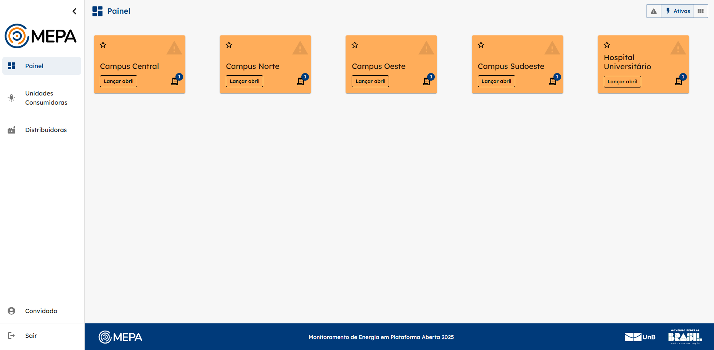
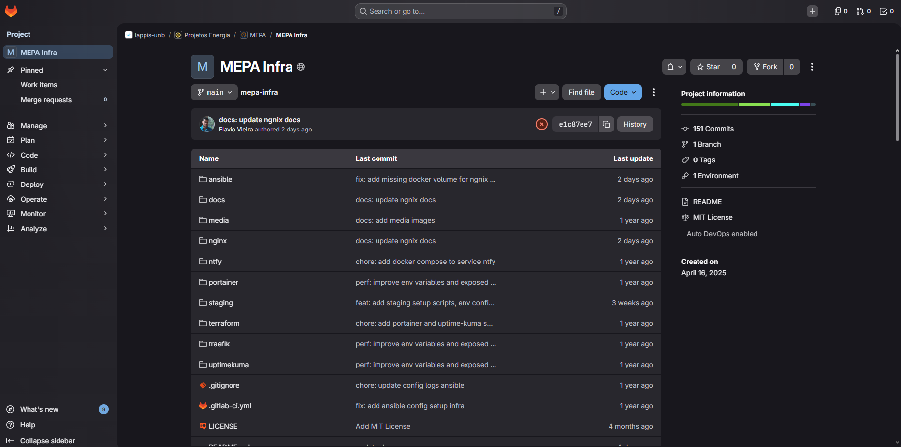

Sprint 0
Objetivo
A Sprint 0 teve como principal objetivo preparar o grupo para iniciar as contribuições no projeto MEPA, estabelecendo um ponto de partida para o entendimento tanto do sistema quanto do fluxo de trabalho utilizado pela equipe mantenedora.
Durante essa sprint, buscamos inicialmente subir o ambiente de desenvolvimento na máquina de todos os integrantes do grupo, seguindo a documentação oficial do projeto, assim todos estariam prontos para contribuir e também já seria possível identificar possíveis dificuldades, inconsistências na documentação e dependências necessárias para novos contribuidores.
Além disso, foi realizado um processo de onboarding com os mantenedores do repositório, com o intuito de entender como o projeto está organizado, quais tecnologias são utilizadas e como ele funciona.
Foi feito o mapeamento do fluxo de contribuição adotado pelo projeto. Foram analisados aspectos como a criação de branches, abertura de Merge Requests, padrões de commits utilizados e boas práticas esperadas pelos mantenedores.
Também foi realizada uma análise inicial das issues disponíveis no repositório, com o objetivo de identificar tarefas classificadas como mais simples ou adequadas para iniciantes e consequentemente para a disciplina. Esse mapeamento servirá como base para a definição das atividades individuais nas próximas sprints, permitindo que cada integrante contribua no projeto.
Sobre o repositório
O projeto MEPA está organizado em um grupo no GitLab mantido pelo LabLivre, laboratório de software da Universidade de Brasília, que anteriormente era conhecido como LAPPIS. Esse grupo concentra os repositórios relacionados ao sistema, separando as responsabilidades entre Web, API e infraestrutura.

Essa organização em múltiplos repositórios ajuda a deixar o projeto mais modular e também permite que cada parte do sistema evolua de forma mais independente. Para a disciplina, isso é importante porque nos dá contato com uma estrutura real de software livre, onde não existe apenas uma aplicação isolada, mas sim um ecossistema de componentes que trabalham juntos.
MEPA API

O grupo do MEPA é composto por três repositórios principais. O primeiro é o MEPA API, responsável pela camada de backend e pelo processamento das regras de negócio do sistema. Esse repositório utiliza Python, Django e Django REST Framework, e concentra as rotas, a autenticação, a integração com o banco de dados e a exposição dos dados consumidos pelo frontend.
MEPA Web

O segundo é o MEPA Web, que representa o frontend da aplicação.

É nele que está a interface visual utilizada pelos usuários, desenvolvida com Next.js, React, TypeScript e Tailwind CSS. Esse repositório é o que mais se relaciona com a experiência de uso do sistema, já que é por meio dele que os dados energéticos são exibidos em painéis, gráficos e telas de navegação.
MEPA Infra

O terceiro é o MEPA Infra, que cuida da infraestrutura e do processo de deploy da aplicação. Esse repositório é responsável por automatizar a configuração do ambiente, o provisionamento da infraestrutura e a publicação dos serviços que compõem o sistema. Ele utiliza ferramentas como Terraform e Ansible, além de conter as configurações relacionadas ao Nginx, Docker e demais componentes de execução.
Como Subir o Ambiente
Durante a Sprint 0, todos os integrantes do grupo devem subir o ambiente de desenvolvimento localmente seguindo a documentação oficial do projeto. Esse processo é importante tanto para validar as instruções existentes quanto para identificar possíveis inconsistências e dependências que novos contribuidores possam encontrar.
| Integrante | Ambiente Subiu |
|---|---|
| Bruno Cunha Vasconcelos de Araújo | ✅ |
| Caio Lucas Messias Sabino | ✅ |
| Gabriel Lima da Silva | ✅ |
| José Oliveira | ✅ |
| Lucas Heler Lopes | ✅ |
| Marcos Vinícius Lima Bezerra | ✅ |
| Matheus Barros do Nascimento | ✅ |
| Matheus Moreira Lopes Perillo | ✅ |
| Vitor Valerio Hoffmann | ✅ |
Pré-requisitos
Antes de começar, certifique-se de ter instalado em sua máquina:
- Git
- Docker v20+
- Docker Compose v2+
1. Faça fork dos repositórios
Acesse cada repositório no GitLab e clique em Fork para criar uma cópia na sua conta. Todo o trabalho de contribuição é feito a partir do seu fork.
2. Clone os forks localmente
# API
git clone https://gitlab.com/SEU_USUARIO/mec-energia-api.git
cd mec-energia-api
git remote add upstream https://gitlab.com/lappis-unb/projetos-energia/mec-energia/mec-energia-api.git
# Frontend
git clone https://gitlab.com/SEU_USUARIO/mec-energia-web.git
cd mec-energia-web
git remote add upstream https://gitlab.com/lappis-unb/projetos-energia/mec-energia/mec-energia-web.git
3. Configure as variáveis de ambiente
Em cada repositório, copie o arquivo de exemplo e ajuste os valores conforme necessário. Em desenvolvimento, os valores padrão do .env.example geralmente já funcionam sem alterações.
# Na API
cp .env.example .env
# No Web
cp .env.example .env.local
4. Suba os containers
docker compose up
Para rodar em background sem travar o terminal:
docker compose up -d
Para acompanhar os logs em tempo real:
docker compose logs -f
5. Execute as migrations (somente API)
Na primeira vez que subir a API, é necessário rodar as migrations para preparar o banco de dados:
docker compose run --rm api python manage.py migrate
6. Crie um superusuário (somente API)
Para acessar o painel administrativo do Django:
docker compose run --rm api python manage.py createsuperuser
URLs de acesso
Com o ambiente no ar, os serviços ficam disponíveis nos seguintes endereços:
| Serviço | URL |
|---|---|
| API | http://localhost:8000 |
| Admin Django | http://localhost:8000/admin |
| Frontend | http://localhost:3000 |
Como contribuir
O projeto aceita contribuições no MEPA Web (frontend) e no MEPA API (backend) — o repositório de infraestrutura não está aberto a contribuições externas. O ponto de entrada são as issues de cada repositório.
O fluxo de contribuição é o mesmo para ambos:
-
Faça um fork e clone o repositório desejado, configurando o upstream:
bash git clone https://gitlab.com/seu-usuario/<repositorio>.git git remote add upstream https://gitlab.com/lappis-unb/projetos-energia/mepa/<repositorio>.git -
Crie uma branch a partir da
mainseguindo o padrãotipo/descricao-curta:bash git checkout -b feat/nome-da-feature -
Faça commits seguindo o padrão Conventional Commits:
| Tipo | Quando usar |
|---|---|
feat |
nova funcionalidade |
fix |
correção de bug |
docs |
alterações em documentação |
refactor |
refatoração sem mudança de comportamento |
test |
adição ou ajuste de testes |
chore |
tarefas de manutenção (deps, config) |
- Abra um Merge Request no repositório original referenciando a issue relacionada.
Frontend
Issues: mepa-web/-/work_items
Backend
Nesse repositório é especificado que existem algumas formas de contribuição:
- Abrir issues que reportam bugs;
- Fechando problemas reportados em issues existentes;
- Proposição de novas funcionalidades;
- Ajudando na qualidade do código e manutenção;
Issues: mepa-api/-/work_items
Antes de contribuir, leia o README e o Código de Conduta do repositório.
Mapa de Issues
Nesta sprint zero, foram selecionadas issues com foco em entrada progressiva no projeto, equilibrando tarefas rápidas com outras de complexidade intermediária.
Issues Fáceis
Essas tarefas possuem baixa complexidade e são ideais para início no projeto:
-
#28 - Implementar âncora para o gráfico Melhora a navegação interna ao direcionar o usuário automaticamente ao gráfico ao interagir com o calendário, evitando confusão em páginas longas de análise.
-
#29 - Implementar mensagens de erro caso não tenha dados do calendário Garante feedback adequado quando não houver retorno da API, evitando que a interface pareça quebrada ou sem resposta.
-
#54 - Conferir e ajustar renderização da página de login Garante que a porta de entrada do sistema esteja polida.
-
#18 - Implementar design do menu de navegação (aba lateral) Define a usabilidade de todo o projeto.
-
#17 - Loading genérico para páginas Implementar o padrão de skeletons agora facilitará a percepção de performance nas próximas tarefas.
Issues Médias
Essas tasks exigem maior entendimento do sistema e envolvem integração ou lógica mais elaborada:
-
#45 - Fazer aba de análise - Importando contratos Desenvolvimento da interface de análise com foco em visualização de dados, incluindo gráficos e indicadores para suporte à tomada de decisão.
-
#44 - Fazer aba de fatura - Importando contratos Implementação de funcionalidades relacionadas à gestão de faturas, com integração ao backend e manipulação de dados financeiros.
-
#56 - Ajustes na aba de performance Refinamento de componentes existentes, incluindo melhorias na exibição de dados, organização dos gráficos e ajustes visuais.
-
#62 - Mostrar tipo de contrato nos relatórios Adiciona detalhamento aos relatórios ao incluir o tipo de contrato, melhorando a clareza e utilidade das informações apresentadas.
-
#46 - Fazer aba de contratos - Importando contratos É o coração do dado; as outras abas dependem do que for feito aqui.
-
#58 - Adequação aba de alertas e eventos Bom para padronizar o tratamento de estados de erro e avisos.
-
#61 - Criar testes unitários Iniciar os testes neste bloco ajuda a garantir que a estrutura base do Next.js não quebre conforme o projeto escala.
Onboarding
Histórico de Versão
| Data | Versão | Descrição | Autor |
|---|---|---|---|
| 18/04/2026 | 1.0 | Estruturando a Sprint | Marcos Bezerra |
| 19/04/2026 | 1.1 | Adicionando Objetivo e descrição dos repositórios MEPA | Marcos Bezerra |
| 19/04/2026 | 1.2 | Adicionando como subir o ambiente | Matheus Barros do Nascimento e Matheus Perillo |
| 20/04/2026 | 1.3 | Adicionando como contribuir | Caio Lucas Messias Sabino |
| 21/04/2026 | 1.4 | Adicionando o mapa de issues | Vitor Hoffmann e Ranni Heler |
| 22/04/2026 | 1.5 | Corrigir padronização do histórico de versão | Matheus Perillo |
| 22/04/2026 | 1.6 | Adicionar PDF de onboarding | Matheus Perillo |